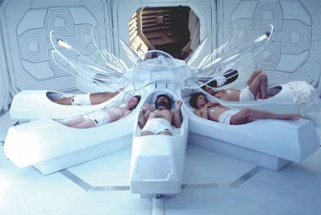
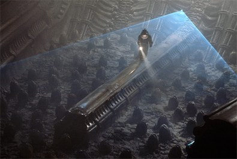
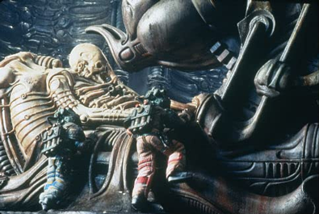
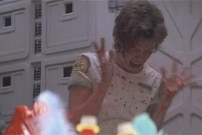
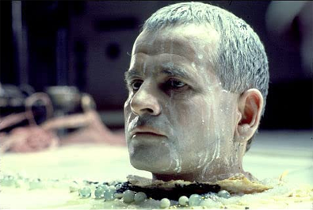
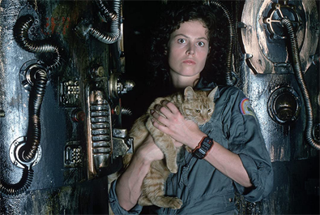

Gordon Carroll
David Giler
Walter Hill
Dan O'Bannon
Ronald Shusett
H. R. Giger
Ron Cobb
Chris Foss


Dallas, captain of the Nostromo
Ripley, warrant officer
Brett, engineering technician
Parker, chief engineer


20th Century Fox did not initially express confidence in financing a science-fiction film but, after the success of Star Wars in 1977, the studio's interest in the genre rose substantially. Writer Dan O'Bannon recalled that "They wanted to follow through on Star Wars, and they wanted to follow through fast, and the only spaceship script they had sitting on their desk was Alien" which O'Bannon and co-writer Roger Shusett had previously pitched as "Jaws in Space".
Shusett and O'Bannon had intentionally written all the roles generically; they made a note in the script that explicitly states, "The crew is unisex and all parts are interchangeable for men or women." They wanted the Nostromo's crew to resemble working astronauts in a realistic environment, a concept summarized as "truckers in space". This freed Ridley Scott to interpret the characters as he pleased, and to cast accordingly. According to Scott, this concept was inspired partly by Star Wars, which deviated from the pristine future often depicted in science-fiction films of the time.
The actors chosen included Sigourney Weaver as Ripley, the warrant officer aboard the Nostromo. Weaver, who had Broadway experience but was relatively unknown in film, impressed Scott, Giler, and Hill with her audition. She was the last actor to be cast for the film, and performed most of her screen tests in-studio as the sets were being built.
Veronica Cartwright was cast as Lambert, the Nostromo's navigator. She had experience in horror and science-fiction films, having acted as a child in The Birds (1963) and Invasion of the Body Snatchers (1978).
Harry Dean Stanton was cast as Brett, the engineering technician. Stanton's first words to Scott during his audition were, "I don't like sci fi or monster movies". Scott was amused and convinced Stanton to take the role after reassuring him that Alien would actually be a thriller more akin to Ten Little Indians.
John Hurt was Kane, the executive officer who becomes the host for the Alien. Hurt was Scott's first choice for the role, but he was contracted on a film in South Africa during Alien's filming dates, so Jon Finch was cast as Kane, instead. However, Finch became ill during the first day of shooting and was diagnosed with type 1 diabetes, which had also exacerbated a case of bronchitis. Hurt was in London by this time, his South African project having fallen through, and he quickly replaced Finch. His performance earned him a nomination for a BAFTA Award for Best Actor in a Supporting Role.
Yaphet Kotto was Parker, the chief engineer. Kotto, an African American, was chosen partly to add diversity to the cast and give the Nostromo crew an international flavour. Kotto was sent a script off the back of his recent success as villain Dr. Kananga in the James Bond film, Live and Let Die (1973), and said he rejected a lucrative film offer in the hope of being cast in Alien.
The unknown Bolaji Badejo was cast as the Alien. Nigerian Badejo, while a 26-year-old design student, was discovered in a bar by a member of the casting team, who put him in touch with Scott who believed that Badejo, at 6 feet 10 inches (7 feet inside the costume) and with a slender frame, could portray the Alien and look as if his arms and legs were too long to be real, creating the illusion that a human being could not possibly be inside the costume.
O'Bannon had previously accepted an offer to work on Alejandro Jodorowsky's adaptation of Dune, a project that took him to Paris for six months. Though the project ultimately fell through, it introduced him to several artists whose work gave him ideas for his science-fiction story including Chris Foss, H. R. Giger, and Jean "Moebius" Giraud. O'Bannon was impressed by Foss's covers for science-fiction books, while he found Giger's work "disturbing".
O'Bannon introduced Scott to the artwork of H. R. Giger; both of them felt that his painting Necronom IV was the type of representation they wanted for the film's antagonist and began asking the studio to hire him as a designer. 20th Century Fox initially believed Giger's work was too ghastly for audiences, but the production team were persistent and eventually won out. "The first second that Ridley saw Giger's work, he knew that the biggest single design problem, maybe the biggest problem in the film, had been solved." Scott flew to Zürich to meet Giger and recruited him to work on all aspects of the Alien and its environment including the surface of the planetoid, the derelict spacecraft, and all four forms of the Alien from the egg to the adult.
The design of the "chestburster" was inspired by Francis Bacon's 1944 painting Three Studies for Figures at the Base of a Crucifixion. Giger's original design, which was refined, resembled a plucked chicken. For the filming of the chestburster scene, the cast members knew that the creature would be bursting out of John Hurt, and had seen the chestburster puppet, but they had not been told that fake blood would also be bursting out in every direction from high-pressure pumps and squibs. The scene was shot in one take using an artificial torso filled with blood and viscera, with Hurt's head and arms coming up from underneath the table. The chestburster was shoved up through the torso by a puppeteer who held it on a stick. When the creature burst through the chest, a stream of blood shot directly at Veronica Cartwright, shocking her enough that she fell over and went into hysterics. According to Tom Skerritt, "What you saw on camera was the real response. She had no idea what the hell happened. All of a sudden this thing just came up." The creature then runs off-camera, an effect accomplished by cutting a slit in the table for the puppeteer's stick to go through and passing an air hose through the puppet's tail to make it whip about.
Critics have analysed Alien's sexual overtones with the Alien creature described as a representation of the "monstrous-feminine as archaic mother" and that the Alien's design, with strong Freudian sexual undertones, multiple phallic symbols, and overall feminine figure, provides an androgynous image conforming to archetypal mappings and imageries in horror films that often redraw gender lines. O'Bannon described the sexual imagery as overt and intentional: "I am going to put in every image I can think of to make the men in the audience cross their legs. Homosexual oral rape, birth. The thing lays its eggs down your throat, the whole number."

